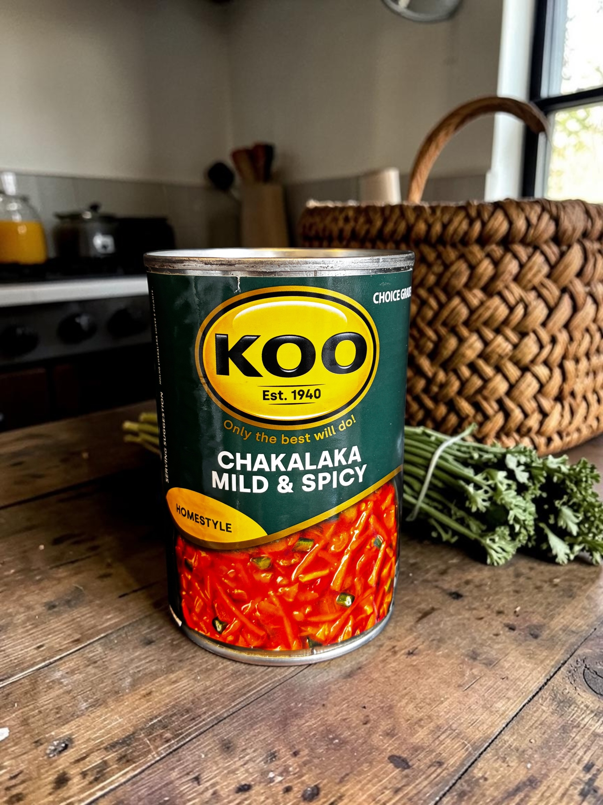
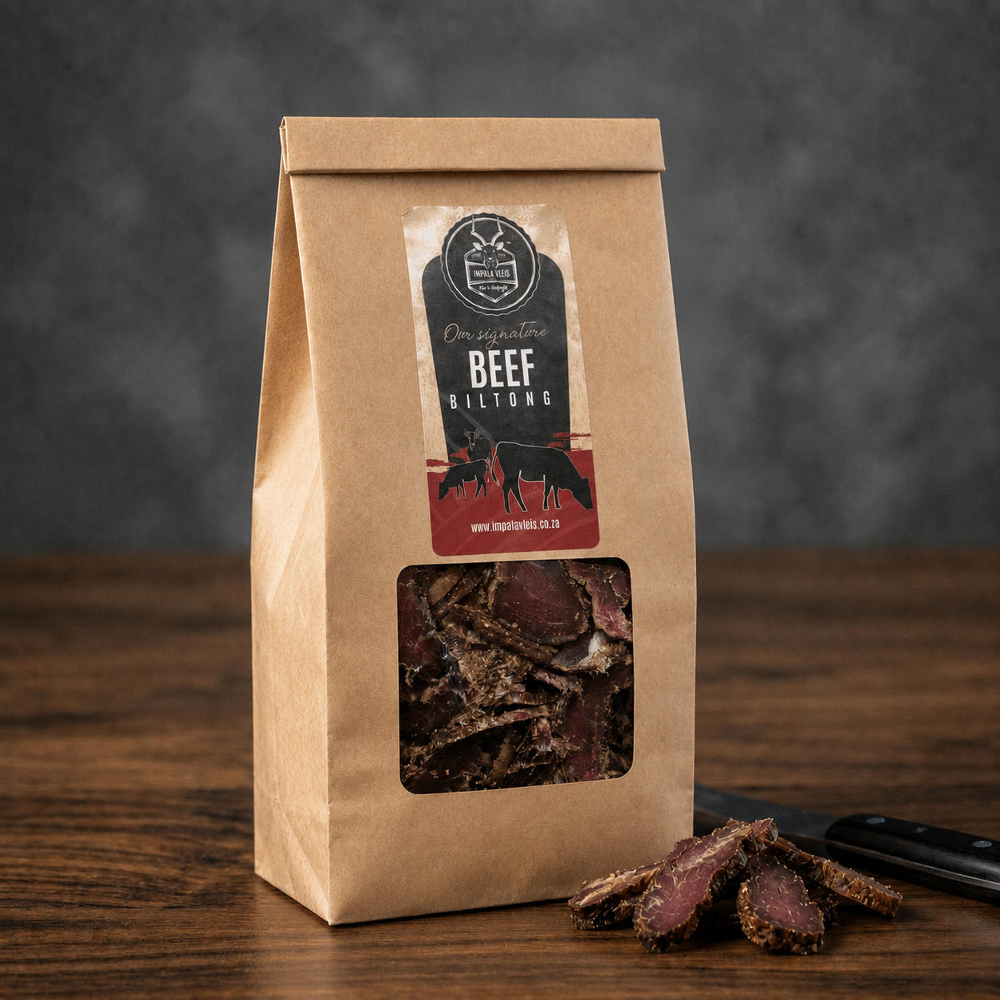

A glance of our products Mrs. Balls Chutney is a sweet, fruity, tangy, and mildly spiced South African condiment. Flavour: Sweet spicy, Sweety mild. Core ingredients: Made from blended of dried fruits such as peaches, apricots.

Chakalaka is a South African mixture of different vegetables including Beans and Sweetcorn. Flavours: Spicy, Savory, and Tangy. Core ingredients: Onions, Tomatoes, Carrots, Bell Peppers, Chili, and Baked Beans.

Biltong is a South African Air dried, cured meat made from thick cuts of beef meat. Flavour: Savory, Salty, and Tangy. Core ingredients: Vinegar, Salt, Spices. Ouma Rusks are South African biscuits traditionally made for dipping into morning coffee or tea. Flavours: ButterMilk, Condensed Milk. Freshpak Rooibos Tea is a South African number one Rooibos tea brand, made from 100% pure Aspalathus Linearis leaves. Flavours: Mixed Fruits Rooibis Tea, Original Rooibos Tea. Nik Naks are South African iconic, crunchy extruded maize (corn) puffs. Flavours: Original Cheese, Fruit Chutney, Spicy Beef/ Beef BBQ, Spicy Chicken, Flamin Hot Chilli.